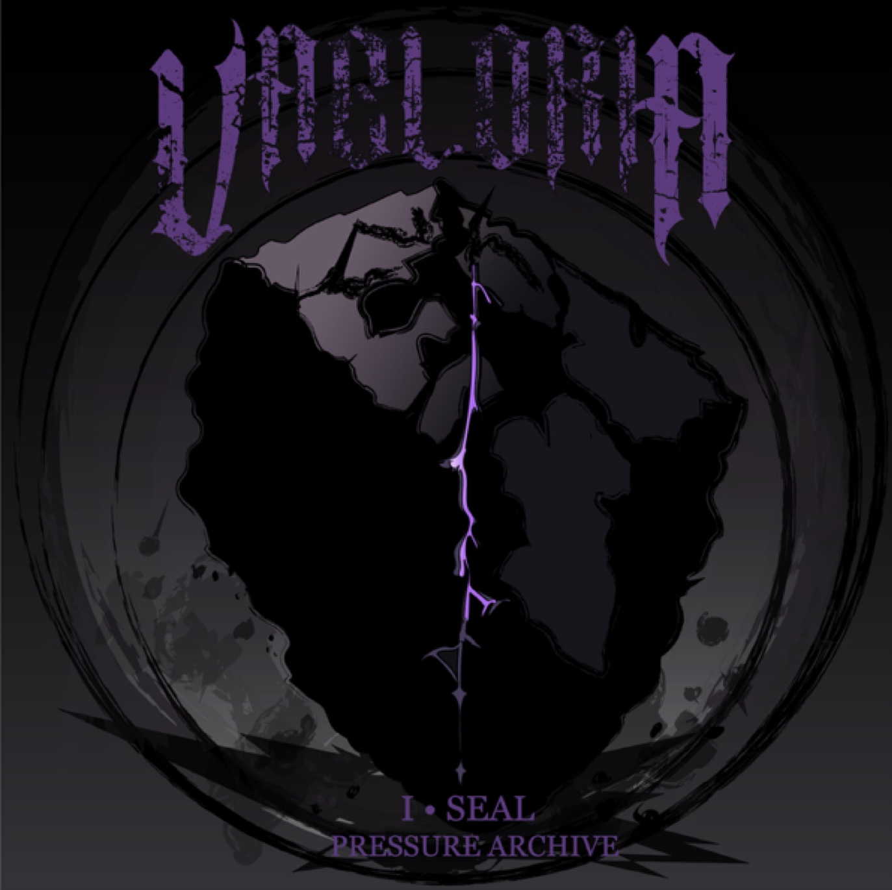

Illustration & Graphic Design
Vaeloria Album I — Seal
Adobe Illustrator • Album Cover Design • Typography
A dark fantasy album cover concept using custom typography, atmospheric composition, and a controlled purple-black palette. This piece introduces the visual identity of Vaeloria through pressure, fracture, and symbolic worldbuilding.